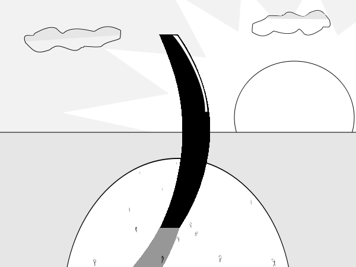

Comic JK 797
When I Feel Like It
⇤
<
?
>
⇥

⇤
<
?
>
⇥
Forum
.
RSS
.
Digg
.
Facebook
.
Reddit
.
Twitter
.
Stumbleupon
)-: (Enter your thoughts on number 797 here. Please, no spamming, trolling, phreaking, or closing your parentheses prema)turely.) ;xkcd.com/859 (when (gerund (see I this)) (past_tense (do I sigh))) (by (way the) (be this amazing)). The end of the world! ((I don't get it.) (Seconded. I looked into Winjas, I guess? All I can think of is something like, the parenthesis starting a new day in some sort of coding reference. Although it kind of looks like a giant hair with smaller, sparse scruffy hair on a bald head.)) ((John McCarthy, Father of LISP, Father of AI.) (( Well, sorry I don't know every single person on the planet. You could also just answer people's confusion in a pleasant way, so their first introduction to the world of programmer celebrities isn't exclusionary.) ( First introduction? Didn't you see the Dennis Ritchie comic (#789) just recently?))) ((Scarily enough, this was my first reaction to the news as well.) ((With that, the last bracket closes on his life.) (But was it tail-recursive?))) ((My non-programmer mind told me it was the closing parenthesis from xkcd's open parenthesis comic.) ((I'm pretty sure you're right!) (Pretty sure it's actually a tribute to John McCarthy))) (And now it's restarted... (I'm pretty sure its lisp)) ((I'm starting to think the guarantee on all the guys that made the key components of modern computing what it is must have all ran out quite recently... did /nobody/ pay for the extended warranty? Didn't take a backup?) (All hardware fails eventually.)) ((He did back up his data to the cloud. Now let's all do our part to keep it going)) (break) (why are we talking like this?) (lisp) (lithp) ;There's no need to spit on me... ) Lisp is for pointy-hat sciency people who'd rather look and feel smart than actually do useful things.